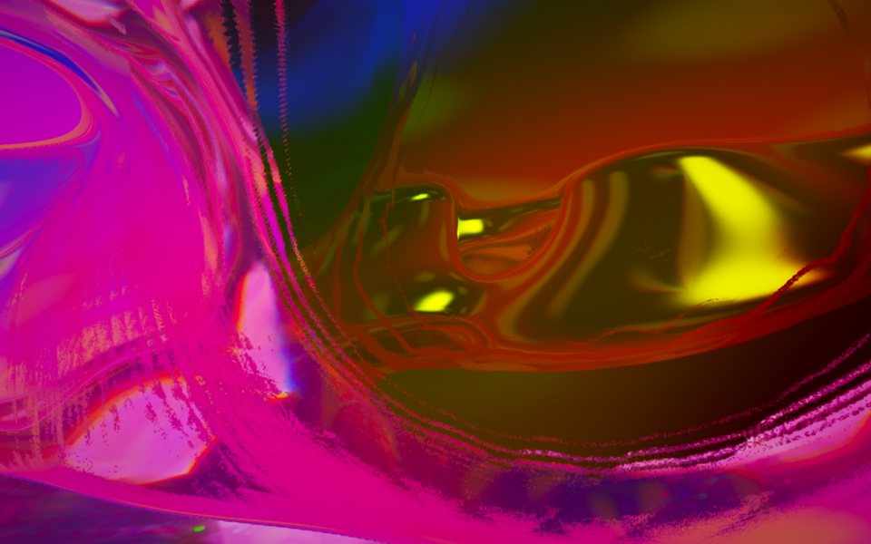
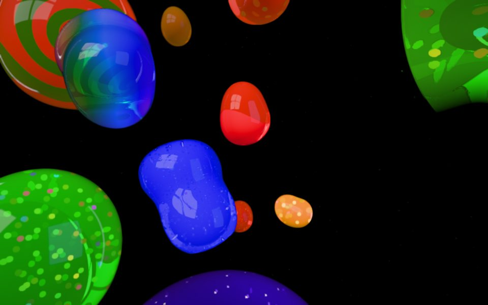

interactive jelly artworks · light & sound
xiuxiueig
whisper, in Catalan · shyoo-shyoo-aitch
These pieces make sound. Turn your volume down before you enter. Headphones are best.

unknowable, unspeakable, unarticulable
An endless field of jelly membranes in psychedelic colour that never repeats, over a silver floor of caustic light. A drone made from the overtones of struck glass breathes with it.

jelly asteroids
Fly through black space among giant jelly sweets. They squash when they touch, melt together for good, and wobble. Each one hums at a pitch set by its size, and every merge plops like a water drop.
Move the pointer (or drag, on touch screens) to lean and steer, and the world carries you forward. M mutes. Best on a desktop browser with a decent graphics card (WebGL2).